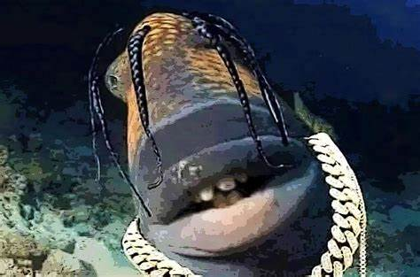

travis scoot omg + 100000000000000000000000000000000000000000000000000aura
Travis Scott Fish or Trafish Scott refers to several images of fish that, in memes, are used to represent rapper Travis Scott due to their perceived vague similarities in appearance.